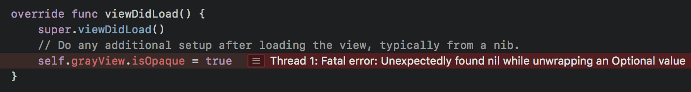
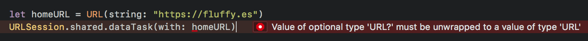
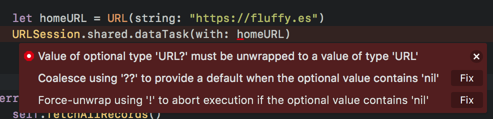

You set out to learn how to program iOS apps, you downloaded Xcode and followed several online tutorials to learn iOS development and it seemed to go well. But once you start coding on your own, you start noticing some weird looking symbols like :
It doesn't seem like a big deal until your app crashes and you are greeted with the scary "Fatal error: Unexpectedly found nil while unwrapping an Optional value" :

What does nil mean? Why finding nil causes the program to crash?
You asked online and some people suggested using if let and guard let to prevent the crash, but what does these mean?! Some suggested to never use the "!" symbol in code but Xcode complains when you don't do so :

You Googled online, found some articles which provide fixes, but you still don't understand why those fixes work , and you're back to square one the next time you are greeted with the same "Fatal error: Unexpectedly found nil" error again. Worse, some of those article are outdated and the Swift syntax is different and you end up with more errors.
And after a while, you gave up and just use the "Fix" button provided by Xcode to make the error go away :

Wouldn't it be good if those funky symbols ("?", "!") doesn't exist? Instead of spending hours fighting with errors, you could focus on the fun part - building features for your app! Unfortunately, optionals are there in Swift, and with good reason, there's no way to avoid it, but we can understand it, be friend with it and use it to our advantage when building features!
What if you are able to navigate through the symbols (? , ! , as! ) easily? You could save hours trying to wrap your head around the errors and focus on your code. Imagine being able to indulge in building features you like and see the result appear in your phone, wouldn't that be great?
You could finish the app idea that you have been working on, submit it to the App Store, and have a better resume for applying iOS developer positions.
Optionals are there for a reason, it's to help your code to deal with absence of values (nil / null values). eg: What should your code do if the expected data doesn’t appear?
When we don't understand how something works, we tend to get intimidated by it (eg: High school maths, how computer works, etc). But once we understand them, it will be easy to navigate around them and use it to help with our daily lives!
This book will cover :
By the end of this book, you would be confident with dealing optionals and be able to utilize it to build your app feature safer. You will also understand how delegate works and be able to code your own delegate.
I'm glad I bought your book “Understanding Optionals”!!!— Wolfgang Greiner
It is really very well described and I have learned some new things.
Especially the comparison between if let and guard let has made some things clear to me now.
What brought me the most was the "delegate" section.
I can absolutely recommend your book to others!!!
Absolutely! Grab your free sample of Understanding Optionals below.
If you can't wrap your head around ? ! , 'Fatal error: Unexpectedly found nil while unwrapping an Optional value', or can't understand how delegate works, this book is for you.
If you already know how optionals / delegate work and can utilize them to handle nil value confidently, this might not be for you.
The book comes in PDF and ePub format.
If using this book does not help you learn and understand optionals or delegate, let me know, within 30 Days of the date of your purchase, and I'll give you a complete refund. No argument. No risk. 100% guaranteed. You can contact me at axel@fluffy.es .
Have other questions? Contact me at axel@fluffy.es, I'll be happy to answer.
Heya! I'm Axel Kee. I’ve been developing iOS apps for companies, clients and myself — from small indie app to social app that get hundreds of thousands of downloads — since 2015.
I started learning iOS app development using Objective-C. When Swift first came out, I got confused by optionals and those funky symbol (eg: ?, !, as!, try?) as Objective-C doesn't have these concepts, Objective-C has various ways of handling nil like [NSNull null], == nil etc. It then took me many hours of googling, practice and crashes that I started to come to understand what am I doing with these ? / ! symbols.
I hope this book can make Optionals 'click' for you, why optionals exist and how to utilize it.
Want to know if my writing style suits you? Check out my iOS development blog here.